2026-10-08 · Godot 4.6.3 · 체크포인트 10
실행 가능한 독창적 턴제 로그라이트입니다. 원작 The Severed Gods와 같은 상용 품질·분량·시각 수준에는 도달하지 않았습니다. 현재는 핵심 전투 루프를 구현한 소규모 캠페인 체크포인트입니다. GitHub 소스 저장소는 공개되어 있으며, 실행 파일의 저장소 배포는 아직 진행 중입니다.
공식 템플릿으로 Windows x64 / Linux x64 실행 파일을 별도 패키징합니다. Linux headless 실행 확인과 native Godot 프로젝트의 화면 플레이를 구분합니다. Windows OS에서의 실행은 미검증입니다.
즉시 보상으로 전환되던 마지막 타격에 1.15초의 건너뛸 수 있는 마무리를 더했습니다. 마지막 공격자의 동작과 남아 있던 적의 실루엣을 보여 주고 재로 흩어집니다. 이전에 절단한 부위는 되살아나지 않습니다. 보상은 이미 한 번만 지급된 상태이며, 연출 중에는 전투·보상·메뉴 입력이 섞이지 않습니다. Space·Enter·Escape 또는 전용 버튼으로 건너뛰며 자동으로도 보상 선택에 도달합니다.
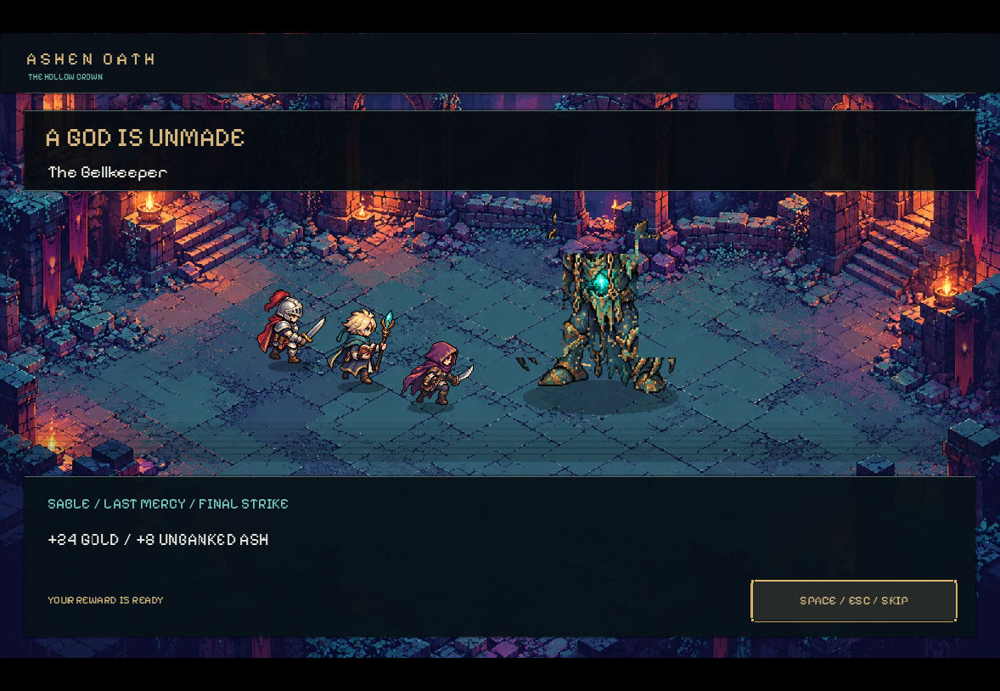
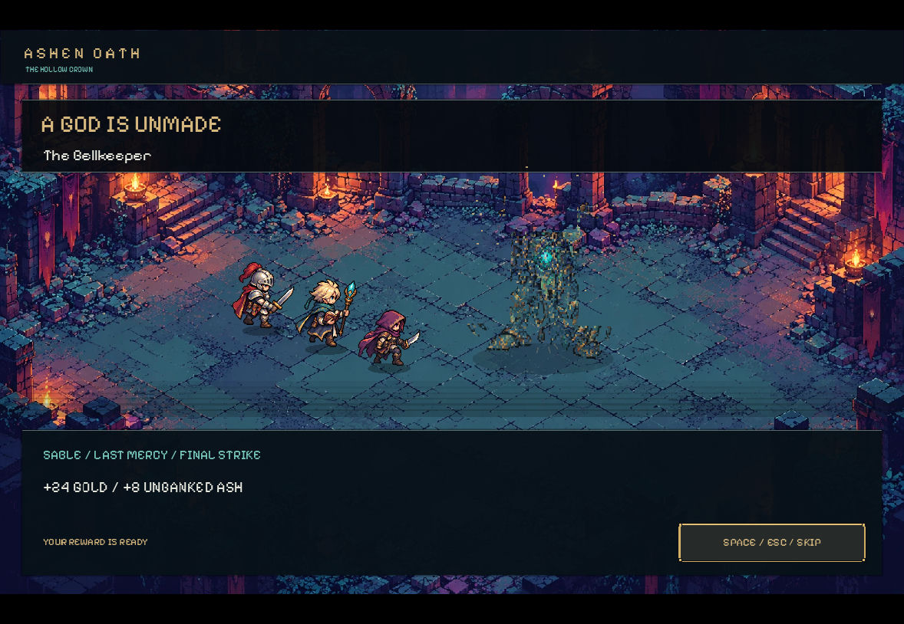
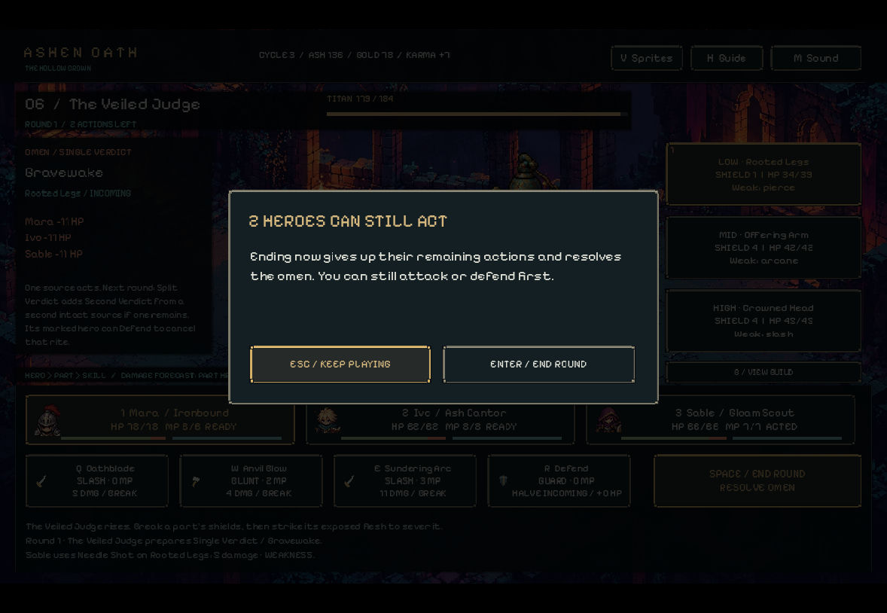
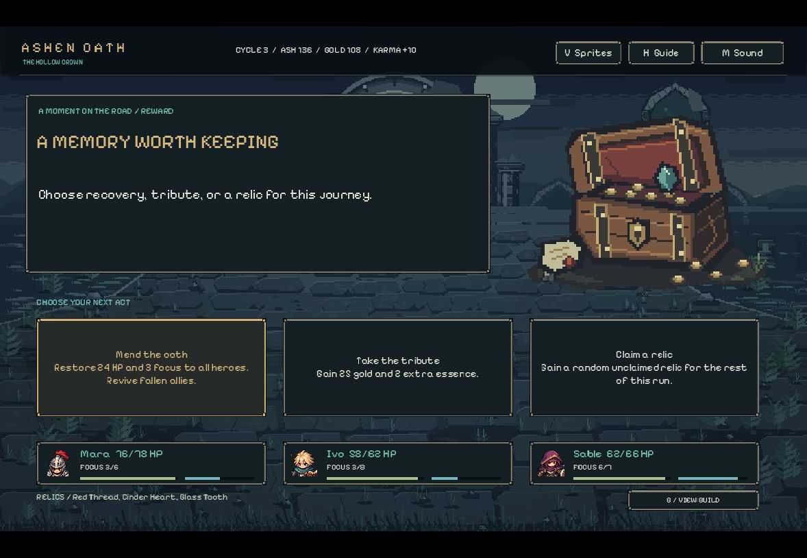
추가 자동 검사 371개는 처치·최후 부위 절단·입력 격리·중복 호출·보상 RNG·연출 중 저장/복원·최종 정산·다음 전투의 셰이더 초기화를 다룹니다. 기존 규칙78, UI88, 저장7, 애니메이션1131, 생성 아트177, 전술770, 보스 규칙22054, 보스 UI121, 50시드 캠페인도 통과했습니다. 이는 완성도 점수나 실제 사용자의 난도 평가가 아닙니다.
여전히 같은 전장과 세 적 디자인을 반복하며, 동작·절단 경계·유물 조합·후반 금 용도·작은 영문 글꼴 개선이 필요합니다. Dummy 오디오로 청취하지 못했고 native FPS·Windows·최신 실행 파일은 미검증입니다. 다음 시각 우선순위는 지역별 전장 구분입니다.
새 전체 여정 완주. 영구 강화 0, 9구간·3보스, 총 네 전투를 실제 키보드와 마우스로 진행했습니다. 초기에는 금을 얻는 대신 음수 카르마를 택해 추가 실드도 확인했습니다. 최종 +53 Ash / Gold 174 / Karma +10, HP 78/62/62. 이전 여정에서 보관한 83을 합친 Ash는 136입니다. 이전 일곱 전투 경로와 다른 준비 중심 경로이므로 전후 난도의 통제 비교가 아닙니다.
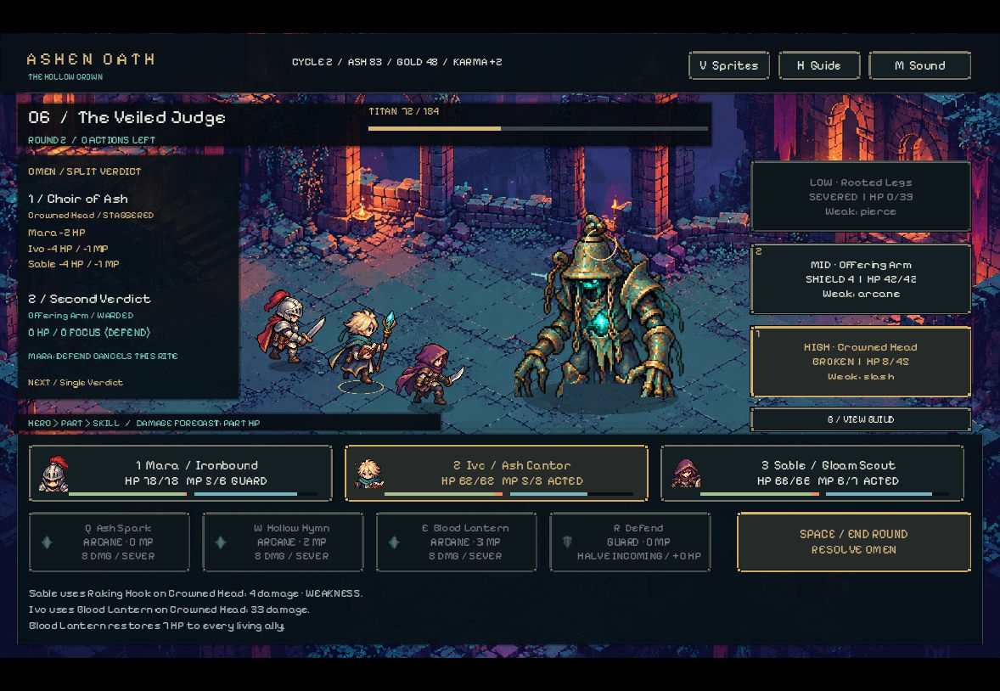
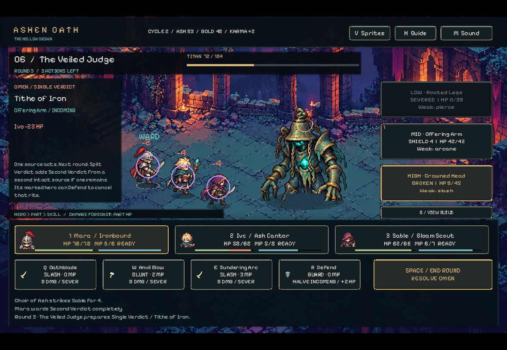
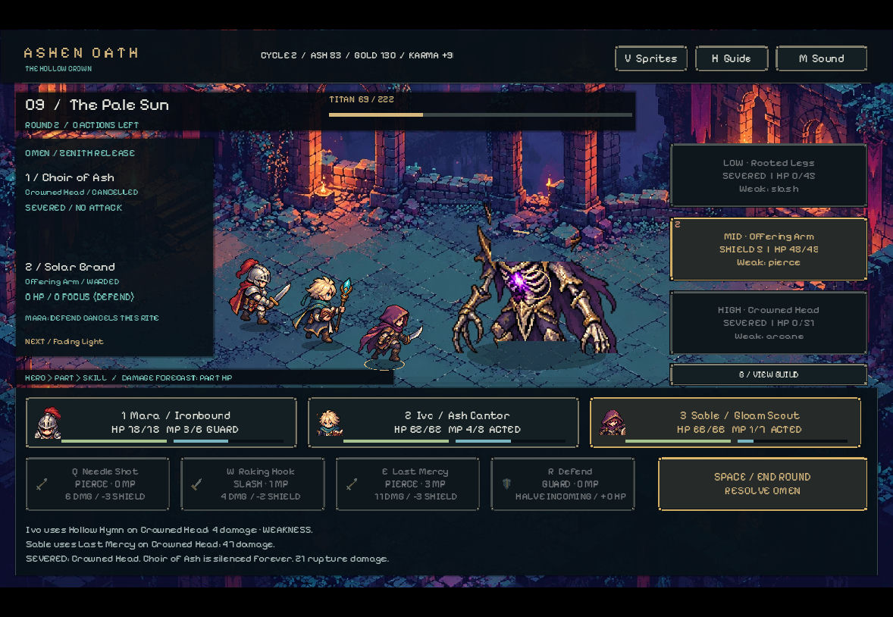
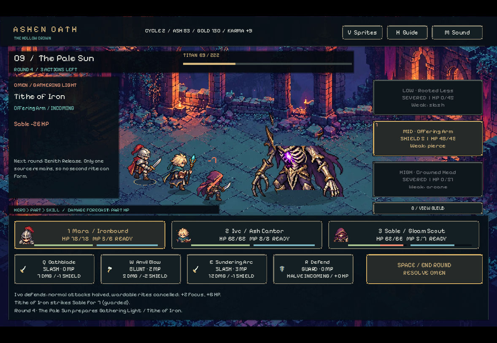
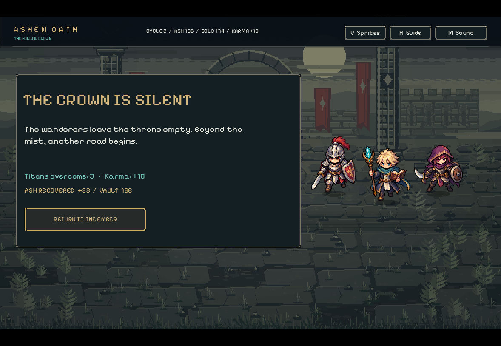
기존 정책을 동일하게 재실행한 100개 시드 비교: 파괴/강타+회복 100→100승, 파괴/강타+공물 86→85승, 무작위+공물 51→50승. 이는 고정 정책의 규칙 시뮬레이션이며 사람의 난도·재미·유지율 검사가 아닙니다. 보스 HP, 부위 HP, 플레이어 피해·실드·유물 수치는 올리지 않았습니다. 정확한 보스 규칙 · 정책 결과.
남은 품질 격차: 적·배경 반복, 제한된 리그 동작과 절단 경계, 급한 마지막 타격→보상 전환, 유물 조합 깊이와 후반 금 가치, 작은 영어 픽셀 글꼴이 남습니다. 사운드는 Dummy 드라이버로 청취하지 못했고 FPS·Windows 실행은 미검증입니다. 한 차례 XServer 렌더링 오류는 앱을 완전히 종료하고 재시작해 복구했으며 잘못된 캡처는 증거에서 제외했습니다.
체크포인트 9 소스·증거는 공개 커밋 610b92d로 검증됐습니다. 최신 배포 실행 파일은 공식 export 템플릿 부재로 미완료입니다. 상용 롤모델 이상의 완성도라고 평가하지 않습니다.
이번 리뷰는 원작의 콘텐츠 수를 채우는 방식 대신, 전투 결과를 예측할 수 있는지·선택이 실제로 달라지는지·실수와 중단에서 안전하게 돌아오는지·그림과 정보가 서로 방해하지 않는지를 기준으로 진행했습니다.
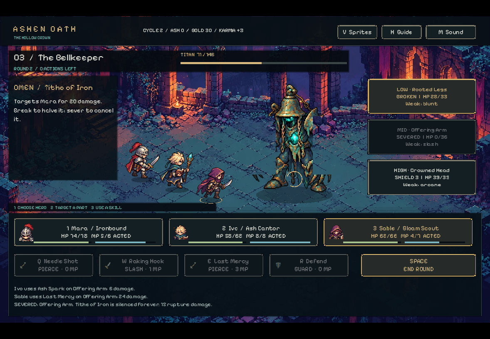
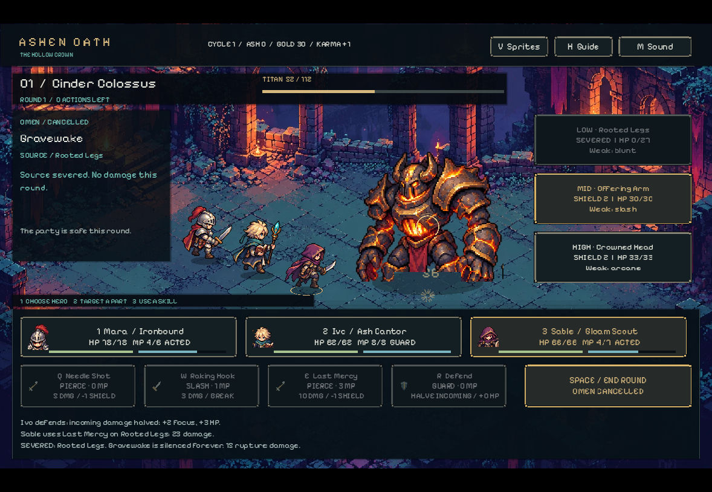
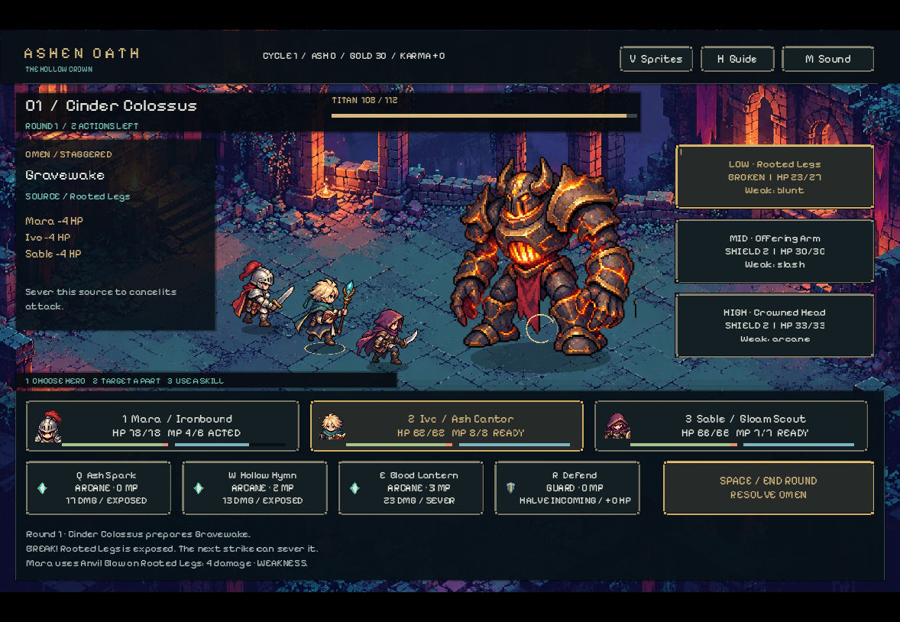
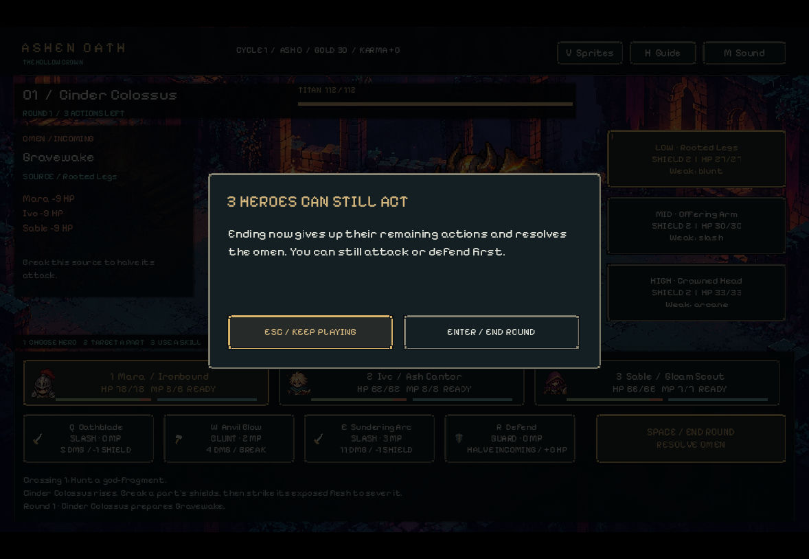
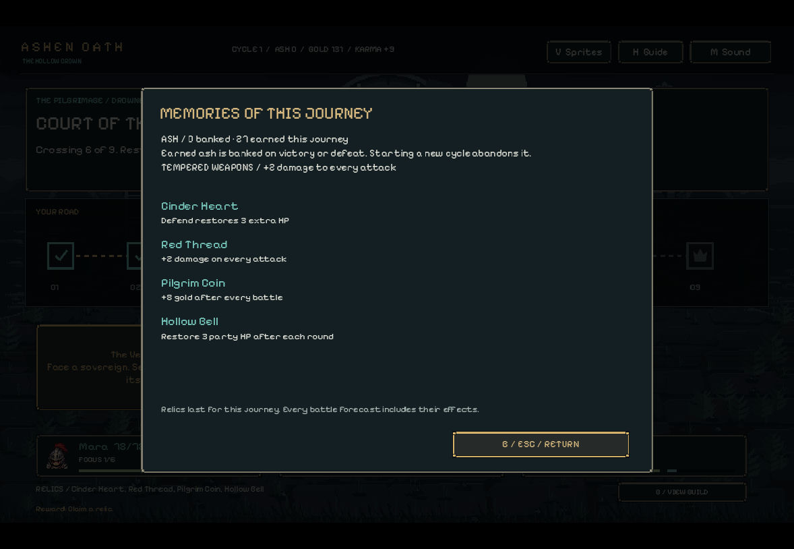
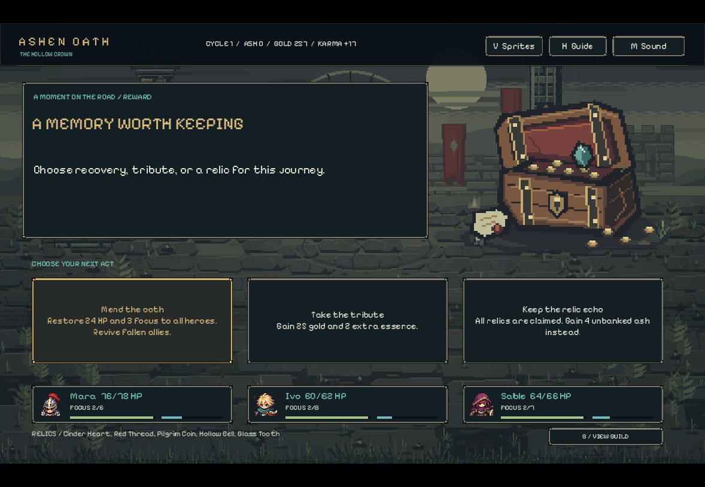
새 native 여정 진행: 영구 강화 0에서 전투가 열릴 때마다 전투를 선택했습니다. 첫 파편, Bellkeeper, 2단계 파편 2회를 모두 2라운드 안에 이겼고 네 전투에서 적에게 받은 피해는 0이었습니다. 캠프에서 무기 강화 1회, 회복 보상 대신 유물을 선택했습니다. 이어서 9구간과 3보스를 완주했습니다. 총 7회 전투(파편 4회·보스 3회)에서 적에게 받은 피해는 0, 마지막 보스 3라운드. 8구간 선택 사건에서 각 영웅 8 HP를 자발적으로 교환했으며, 최종 HP 76/60/64입니다. 최종 Ash 83 / Gold 257 / Karma +17을 실제 화면에서 확인했습니다.
동일한 부위별 공격 순환을 이해하면 현재 OMEN의 근원을 파괴·절단해 적 턴을 반복 차단할 수 있습니다. 이는 전술을 잘 읽은 보상이라는 장점이 있지만, 보스별 다른 판단을 요구하는 장치가 부족해 반복 전략이 강합니다. 두 번째와 마지막 보스에서도 반복 차단이 유지되었습니다. 다음 개선은 정답 플레이를 무조건 벌주는 피해 증가가 아니라, 보스별 사전 예고와 별도 대응 선택을 추가하는 것입니다.
| 확인 기준 | 근거와 판정 | 다음 개선 우선순위 |
|---|---|---|
| 전투 판단 | live OMEN·공격 예상치·가드 반영은 실제 입력에서 일치. | 보스별 다른 판단을 요구하는 패턴, 타격과 전투 종료 연출. |
| 난도·보상 | 100개 시드의 규칙 시뮬레이션: 파괴 후 강타+회복 100승, 무작위 합법 행동+회복도 100승. 공물 선택 시 각각 86승/51승. | 회복 보상 의존, 숙련 플레이의 전투 무력화, 위험 대비 보상 확인. |
| 성장·경제 | 첫 신전→새 여정의 전투 없는 Ash 적립을 차단. 0강화에서도 초기 네 전투 무피해. 시뮬레이션 숙련/회복 경로는 평균 금 189가 남음. | 금의 후반 가치, 유물 간 상호작용과 다양한 빌드. |
| 배경·캐릭터 | 제공된 캐릭터·폐허 참고 이미지와 공식 Steam 전투 화면을 직접 비교. 인물·UI 대비와 기존 팔레트는 일관적이나 같은 전투 배경과 적 그림의 반복이 보임. | 지역별 전투 환경, 보스 실루엣 구분, 매끈한 절단 경계. |
| 애니메이션·연출 | 12개 생성 포즈+엔진 리그. 회전한 서 있는 포즈형 사망, 단순한 공격 움직임, 마지막 타격 직후 보상 전환이 남음. | 스킬별 명확한 준비/타격/회복, 보스 공격·죽음의 화면 피드백. |
| UI·접근성 | 이번 1178×814 native 창에서 새 예고·버튼·확인 창이 잘림 없이 표시. 텍스트로 위험 상태를 병기. | 작은 픽셀 글꼴, 영어 전용, 다른 해상도·키보드만의 전체 경로 검증. |
| 사운드·성능 | native 실행은 Dummy 오디오 드라이버이므로 청취 평가 불가. 전체 여정에서 진행 정지나 스크립트 오류는 없었지만 FPS 계측은 미실행. | 실제 출력 장치 청취, 음악/스킬별 음색, 프레임 시간 측정. |
시뮬레이션은 1001–1100 시드, 전투 우선 경로와 고정 정책을 사용했습니다. 무작위 행동은 별도 시드 RNG입니다. 최종 HP는 보상 회복 이후 값이므로 무피해를 뜻하지 않습니다. native 전체 일곱 전투의 적 피해 0 관찰과 시뮬레이션 결과를 구분합니다. 전체 정책·수치·한계 · 재현 스크립트.
현재 자동 회귀 검사: 규칙78, UI88, 저장7, 기존 애니메이션1131, 생성아트177, 전술 예측/입력 보호770, 50개 시드 캠페인 모두 정상 종료. 예측 검사는 영웅·공격·부위·단계·실드 상태 조합을 실제 명령 결과와 대조합니다. 검사 개수는 완성도 점수가 아닙니다. 아래의 과거 완주 증거는 당시 버전의 기록입니다.
최신 Windows/Linux 배포 실행 파일은 공식 export 템플릿 부재로 아직 만들지 못했습니다. 원작 자체의 직접 플레이, 상용 원작을 능가한다는 평가, Windows 실제 실행, 청취 품질과 목표 FPS는 검증하지 않았습니다.
2026-10-08. 세 영웅의 12개 독립 방향 포즈와 몬스터 3종을 기존 생성 배경과 결합했습니다. UI 초상화도 동일한 아트를 사용합니다. 원본 생성 마스터를 보존하며, 게임에서 atlas 영역·메시 리그·절단 마스크로 그립니다.
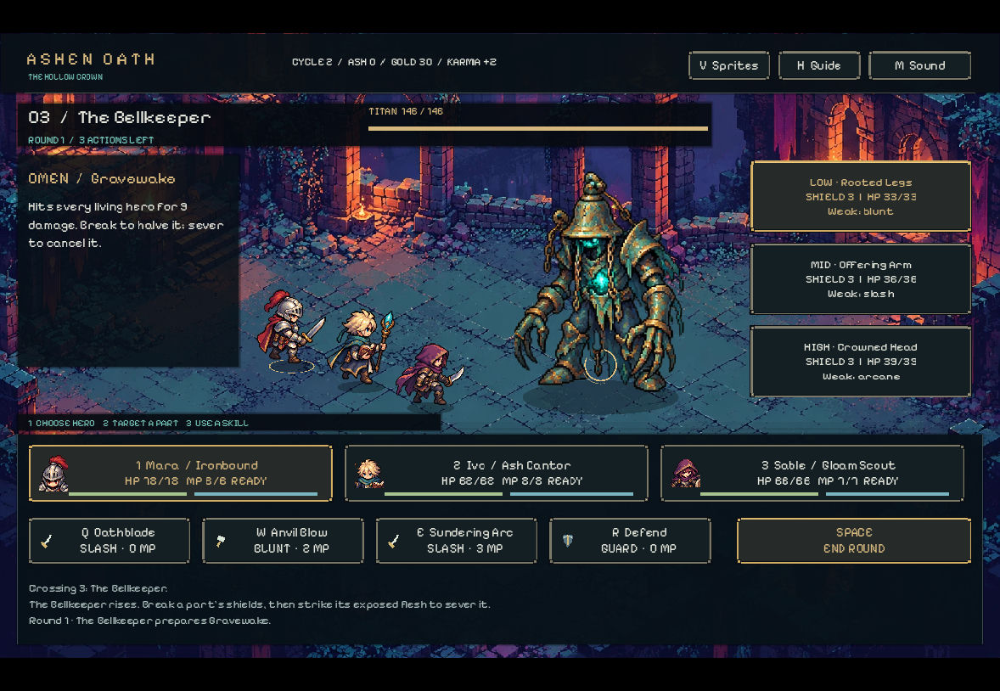
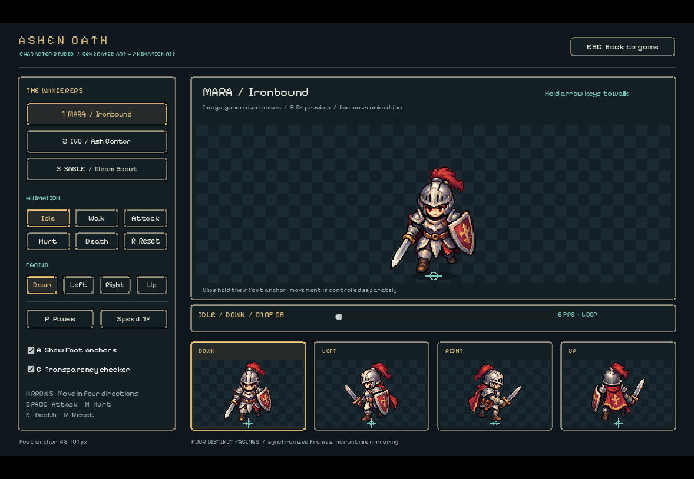
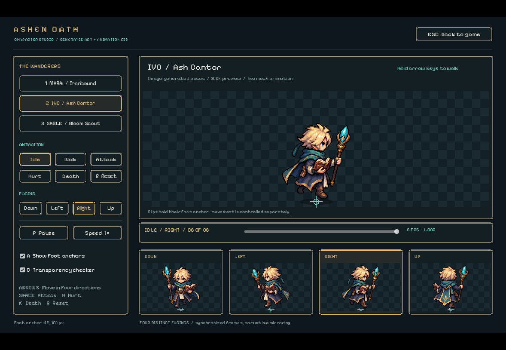
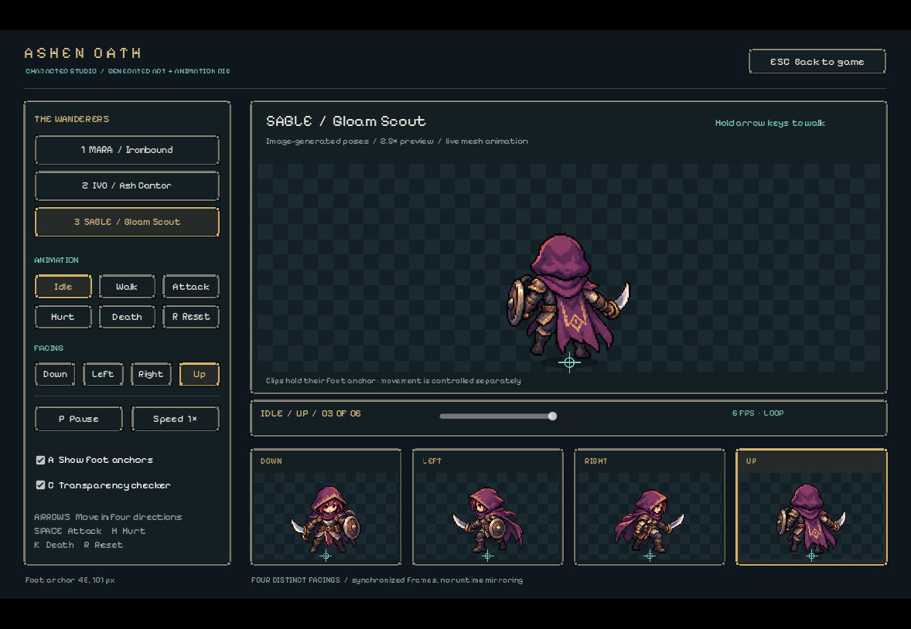
전투 공격·다리 절단과 세 영웅의 스튜디오, 방향 이동·공격·피격·사망·초기화를 직접 입력했습니다. 규칙78, UI82, 저장7, 기존 애니메이션1131, 새 생성아트177 검사 및 50개 캠페인 시드가 통과했습니다.
움직임은 12개 생성 포즈에 엔진 리그를 적용합니다. 372장의 개별 생성 프레임이나 상용 원작 동등 품질을 뜻하지 않습니다. 새 배포 실행 파일은 공식 템플릿 부재로 미완료이며, 기존 체크포인트5 실행 파일에는 이번 아트가 없습니다. 사운드는 cloud desktop 출력 장치가 없어 청취 검증하지 않았습니다.
제공 이미지의 인디고/청록/주황 조명과 석조 폐허 질감을 참조해, 내장 이미지 생성 도구로 독창적인 넓은 전투 안뜰 한 장을 생성했습니다. 원본 1586×992 PNG를 별도 보존하고 같은 해상도의 WebP를 게임에 적용했습니다.
직접 입력: 새 여정 → 캠프 무기 강화 → 2구간 전투 → W Anvil Blow. MP6→4, 실드 파괴 및 부위HP27→22를 확인했습니다. 최종 대비 수정 후 새 실행 창에서 Resume하여 동일 상태를 확인했습니다. 배경 전체를 어둡게 하지 않고 제목/라운드와 작은 조작 안내 뒤에만 어두운 띠를 넣었습니다.
바닥 원근과 발 그림자를 검토했으며 세 영웅과 보스가 열린 바닥 위에 위치합니다. 벽·불꽃이 발이나 주요 행동 버튼을 가리지 않습니다. 그림은 정적이고 생성 이미지의 세밀함에 비해 기존 보스는 단순합니다. 정확한 픽셀 그리드, 역동적 조명 또는 원작 동등성을 주장하지 않습니다.
검사 통과: 규칙78, UI82, 저장7, 애니메이션1131, 캠페인50시드. 새 native export는 미완료입니다. 공식 템플릿 복구 상태 확인이 취소되었고 허용된 동일 재시도에서 세션이 사라진 것으로 확인되었습니다. 읽기 검사에서 Windows/Linux 템플릿 모두 없었습니다. 기존 실행 파일 백업은 체크포인트5이며 이번 새 배경을 포함하지 않습니다.
기존의 단순 실루엣 배경과 모든 사건에 반복되던 거대 석상을 제거했습니다. 기존 세 환경 배경, 픽셀 테두리·글꼴, 영웅 초상화·HP/MP 바를 지도와 사건에도 적용했습니다. 새로 그린 캠프 화로·신전·순례자·보물함은 256×192 투명 PNG, 논리 출력 512×384입니다. 게임 규칙과 분량은 바꾸지 않았습니다.


시각 검토: 서사와 선택지가 배경 질감에 묻히지 않으며 카드/글꼴/팔레트가 전투와 일관됩니다. 삽화와 환경은 정적이고, 석상 보스 디테일·유기적인 움직임·원작의 입체 조명과 분량 차이는 남습니다. 전체 품질 동등성이나 98%를 의미하지 않습니다.
세 영웅 × 네 방향 × 31프레임 = 372프레임. 96×112 RGBA 셀과 (48,101) 발 기준점을 공유합니다. Idle 6@6fps, Walk 8@10fps, Attack 8@12fps, Hurt 3@10fps, Death 6@8fps. 좌우는 독립 투영이며 무기 손·견장·팔 가림 순서를 유지합니다. 공격/피격은 idle로 복귀하고 사망은 마지막 프레임에 멈춥니다.


규칙 78, UI 57, 저장 7, 애니메이션 1,131 검사 및 50개 시드 통과. Windows/Linux export 성공, Linux headless와 실제 실행 파일 모두 실행 확인. Windows OS 실행·청취 평가는 여전히 미검증입니다. 아래 전체 캠페인 완주는 이전 체크포인트의 증거이며, 이번 아트 변경 후 새로 전체 완주한 것처럼 해석하면 안 됩니다.


| 기준 | 이번 개선 | 남은 차이 |
|---|---|---|
| 픽셀 크기·팔레트 | 세 영웅 동일 셀/아웃라인, 제한된 재질 팔레트와 픽셀 UI | 전체 창의 비정수 배율에서는 픽셀 폭이 불균일할 수 있음. 적은 영웅보다 큰 픽셀 단위 |
| 재질·입체감 | 금속·천·가죽 하이라이트, 벽돌·수풀·석판 군집, 전후경 명도 분리 | 참고 캐릭터의 정교한 수작업 묘사, 원작의 2.5D 조명·공간감에는 미달 |
| 애니메이션 | 독립 네 방향, 걷기/공격/피격/사망, 발 고정과 공격 이벤트 | 일부 idle/contact 포즈 반복. 개별 스킬 전용 동작과 유기적인 관절 연결이 부족 |
| 전투 정보 | OMEN/부위/약점/행동/MP 상태 계층, 대비 있는 테두리와 속성 아이콘 | 영어만 지원, 작은 픽셀 글꼴은 취향·접근성 한계. 지도/사건은 체크포인트 5에서 개선. 삽화/배경은 정적 |
| 적·콘텐츠 | 기존 파괴/절단 시각과 캠페인 유지 | 석상형 보스 형태 다양성·디테일과 전체 분량의 큰 격차 |
품질 점수나 98% 유사도 수치를 산출하지 않았습니다. 실제 참고 이미지와 공식 Steam 스크린샷에서 보이는 수준과 동등하다는 주장은 하지 않습니다.


2026-10-07 17:35 UTC에 전체 9구간과 3보스를 실제 키보드·마우스로 완주했습니다. 중단된 세션의 상태를 다시 확인해 이어서 플레이했으며, 승리 화면에서 Ash 51 / Gold 153 / Karma +11을 확인했습니다. 원작과 동등한 품질이나 98% 달성을 의미하지 않습니다. 소리 청취 평가는 미실행입니다.


추가 플레이: 첫 보스 → 캠프의 무기 강화 → 두 번째 보스에서 변경된 약점에 맞춘 영웅 순서 → 신전 유물 → 최종 캠프 → 마지막 보스의 세 부위 절단 → 마지막 보상 → 승리. 보스의 공격 취소/파괴에 따른 절반 피해/일반 피해도 화면으로 확인했습니다.
Steam 공식 appdetails에서 제공한 스크린샷 1·2를 직접 확인했습니다. 공식 전투 화면 1 · 공식 전투 화면 2. 해당 이미지는 게임 에셋으로 포함하거나 픽셀을 복사하지 않았습니다.
| 기준 | 확인한 원작 | 현재 구현/판정 |
|---|---|---|
| 공간·조명 | 풍부한 2.5D 지형, 대기감, 심도와 조명 | 질감 있는 2D 레이어와 원근 도로. 개선됐지만 큰 차이 |
| 캐릭터·적 | 상세 픽셀 영웅, 다양한 생물형 거대 적 | 직접 만든 영웅 3종, 석상 계열 3팔레트. 형태·표현 다양성 부족 |
| 전투 가독성 | 부위별 높이/실드, 행동 순서, 상세 명령 UI | 부위/실드/약점/예고와 행동 수 표시. 연속 턴 순서·전투 UI 방식은 다름 |
| 파괴·절단 | 부위 파괴로 적 행동 제한 | 실드 파괴 후 절단, 해당 행동 취소. 실제 플레이 확인 |
| 연출 | 상세 캐릭터 표현과 상용 화면 구성 | 투사체·타격 입자·피해 숫자·간단한 움직임. 애니메이션 품질 격차 |
| 분량·성장 | 공식 페이지의 다수 영웅/세계/스킬/유물 | 9구간, 영웅 3명, 유물 5종, 강화 3종. 분량 대폭 축소 |
godot --headless --path . --script res://selftest.gd godot --headless --path . --script res://ui_selftest.gd godot --headless --path . --script res://campaign_stress.gd godot --headless --path . --script res://resume_selftest.gd godot --headless --path . --script res://animation_selftest.gd
빌드 방법은 BUILDING.md, 조작은 README.md, 자산 출처는 PROVENANCE.md, 원시 로그와 실제 캡처는 verification 폴더에서 확인할 수 있습니다.